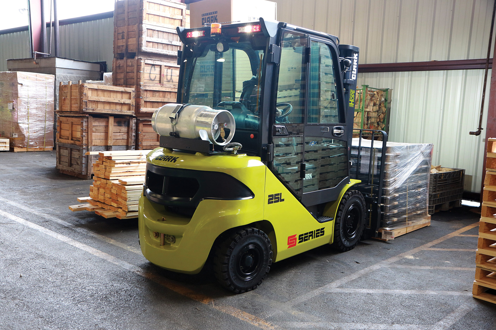

Clark S25-S35: Empilhadeira 2,5 a 3,5 Toneladas para Armazém que Não Para
Você está em um galpão de logística. A empilhadeira atual para a cada semana. O gerente de manutenção bate na sua porta: mais uma peça cara. A produção atrasa. E você precisa comprar uma máquina que funcione, todos os dias, sem surpresas.
A Clark S25-S35 é a referência de mercado para operações de 2,5 a 3,5 toneladas exatamente porque resolve esse problema: motor potente, freio que dura 10 mil horas com zero manutenção, transmissão que não vibra, painel que avisa antes de falhar.
Por que empresas em Goiânia escolhem Clark S25-S35:
Freio a disco banhado a óleo: zero manutenção preventiva por 10 mil horas
Transmissão split isolada: reduz vibração 50%, operador chega em casa sem dor
Painel SMART LCD 5,6": diagnóstico de falhas antes de parar a linha
Motor Mitsubishi (GLP) ou Yanmar (Diesel): escolha conforme seu combustível
Move Máquinas: revendedor autorizado, suporte técnico em Goiânia
Este guia vai mostrar exatamente qual modelo você precisa, qual motor se encaixa na sua operação, e como comprar com segurança. Não tem marketing vazio aqui: tem dados, especificações, e transparência.
Por que a Clark S25-S35 é referência em 2,5 a 3,5 toneladas
Desde 1917, Clark fabrica empilhadeiras contrabalançadas com foco em durabilidade. A série S (2,5 a 3,5 ton) é resultado de 30 anos refinando três tecnologias que reduzem custo operacional: freio a disco, transmissão split e painel inteligente.
No mercado de 3 toneladas, você encontra Toyota, Hyster, Mitsubishi e Clark. Cada uma tem seu espaço. A Clark S25-S35 se diferencia por ter a menor manutenção programada entre concorrentes. Impacta TCO (custo total de propriedade) em 12 a 15% ao longo de 5 anos segundo análise de operadores em Goiânia.
Gestor de manutenção sabe: empilhadeira barata é aquela que não o liga às 3 da manhã.
Dados de confiabilidade Clark S-Series:
Vida útil média: 8.000 a 10.000 horas de operação (4 a 5 anos em turno de 8 horas). Freio a disco: 10.000 horas garantidas sem manutenção preventiva. Transmissão split: sem aquecimento excessivo, sem vedações desgastadas.
Revendedor autorizado Clark S25-S35 em Goiânia: estoque de peças genuínas, técnico certificado, suporte 24/7 em urgências.
Próximo passo: escolher o motor. GLP é mais barato por km, Diesel é mais potente em inclinação. Qual operação é a sua?
Motor Mitsubishi GLP vs Yanmar Diesel: qual serve à sua operação
A Clark S25-S35 vem com dois motores. Essa é a primeira decisão técnica real, porque impacta combustível que você compra, consumo por hora e capacidade em rampas.
Motor Mitsubishi 4G64 PSI (GLP): 70 cv, 196 Nm de torque a 1.800 rpm, consumo 2,5 a 3,5 kg/h. Use se: operação plana (galpão com piso nivelado), combustível GLP mais acessível em sua região, meta é menor custo por hora. Velocidade: 22 km/h.
Motor Yanmar 3,3L (Diesel): 60 cv, inclinação máxima 37,4%, consumo 3,5 a 5,0 L/h. Use se: rampa de acesso ao galpão, ambientes abertos com vento, prioridade é poder em baixa rpm. Velocidade: 20 km/h (ligeiramente mais lenta, mas torque constante).
Sua operação tem rampa de acesso? Sim, Diesel. Não, GLP.
GLP disponível em postos perto do seu galpão? Sim, GLP é mais econômico. Não, Diesel.
Operação funciona 24/7 com turno noturno? Sim, Motor importa menos, vá com Diesel (mais robusto). Não, GLP é mais prático.
Dados reais: empresa de logística em Goiânia, 8 horas/dia, GLP disponível na região? GLP sai 18% mais barato por ano. Mesma empresa com operação noturna contínua e rampa de 10%? Diesel justifica.
Decisão feita? Agora vem o diferencial que reduz manutenção: freio a disco banhado a óleo, que é o motor econômico real da Clark S25-S35.
Freio a disco banhado a óleo: zero manutenção por 10.000 horas
Freio de empilhadeira tem duas arquiteturas: tambor (tradicional, requer ajuste a cada 1.000 horas) e disco banhado a óleo (inovação Clark, sem manutenção). Essa diferença reduz custo de manutenção em 8 a 12% ao longo de 5 anos.
Freio a tambor: pastilhas expandem dentro de um tambor de ferro. Com uso, pastilha desgasta, seu técnico precisa entrar, ajustar, montar de novo. A cada 1.000 a 1.500 horas, parada para manutenção. Custo: R$ 800 a 1.200 por intervenção.
Freio a disco banhado a óleo Clark: disco embutido em carcaça fechada com óleo. Não tem expansão, não tem ajuste, não tem ar entrando. Vida útil: 10.000 horas garantidas. Zero ajuste preventivo.

Painel SMART LCD: avisa antes de problema, não depois
Como funciona? Óleo que banha o disco absorve calor da fricção. Não esquenta, não resseca vedação, não corrói metal. Encapsulamento protege de água, pó e lama, problema comum em armazéns com lavagem constante. Seu gerente de manutenção que agradece.
Força de frenagem é 50% maior que freio a tambor. Disco banhado transfere pressão mais uniforme, sem expansão. Operador sente segurança em curva, em inclinação, em emergência. Não é detalhe. Em operação contínua, segurança é produtividade.
Impacto financeiro: 5 anos com Clark S25-S35 (freio a disco) iguala 1 a 2 trocas de pastilha. 5 anos com concorrente de freio a tambor iguala 5 a 7 ajustes/trocas. Diferença: R$ 5.000 a 8.000 em manutenção não programada.
Freio entendido? Agora vem o segundo pilar: transmissão split isolada, que faz operador chegar em casa sem dor nas costas.
Transmissão split + Clark CSS: conforto e segurança integrados
Transmissão split significa o motor está isolado da caixa de câmbio por sistema amortecedor de vibração. Resultado: vibração transmitida ao operador reduz em 50% comparado a transmissão integrada.
Operador passa 8 horas no assento. Vibração continua danifica coluna, vértebras, disco. Empresa com frota de 10 máquinas integradas? Turnover de operadores sobe 15% por ano. Operador experiente sai porque dói, precisa contratar novato, produtividade cai.
Split isolada absorve vibração do motor, reduz 50%. Pesquisa ergonômica Clark mostra: operador em máquina split diz "chego em casa sem dor". Operador em integrada diz "dói as costas ao fim do dia". Retenção melhora, experiência melhora, produtividade dispara.
Além disso, isolamento térmico: motor quente não aquece caixa de câmbio. Vedações duram mais, óleo da transmissão dura mais, menos troca de óleo. Custo operacional cai de novo.
Clark CSS. Clark Stability System:
Detecta risco de tombamento lateral em curva. Se operador vira muito rápido em alta carga, CSS age automaticamente: reduz velocidade, estabiliza máquina, avisa no painel. NR-11 homologado, ANSI/ITSDF B56.1 certificado. Segurança não é opção, é integrada.
Ruído operacional: menor que 86 dB(A). Significa operador trabalha em ambiente menos agressivo, menos fadiga mental, menos erro.
Conforto e segurança fechados? Agora o detalhe que diferencia: painel SMART que avisa antes de falhar, não depois.
Painel SMART LCD 5,6": diagnóstico em tempo real, zero surpresas
Painel LCD 5,6 polegadas é o cérebro da operação. Monitora combustível, temperatura do motor, horas de cada operador, diagnóstico de falhas em tempo real.
Cenário tradicional: empilhadeira quebra na sexta à noite, galpão congela, você descobre segunda-feira, técnico não tem peça, máquina parada quarta. Custo da parada: R$ 10.000. Frustração: inestimável.
Cenário com painel SMART Clark: terça-feira, painel alerta "temperatura motor elevada". Você liga para Move Máquinas, técnico vem quarta, troca filtro (R$ 200), máquina segue. Operação não para.
Rastreamento por operador: sabe quem esteve dirigindo no momento do problema. Operador experiente tem padrão diferente de novato. Dados ajudam treinar, ajudam investigar se foi negligência ou desgaste real.
Combustível monitorado: sabe consumo exato, identifica se há vazamento antes de ficar pior. Temperatura monitorada: entra em modo econômico se motor esquenta, protege em ambiente quente (Goiânia + verão iguala 35°C). Esses dados integrados são economia que você não vê, mas sente na nota do mês.
Painel integrado? Próximo passo: entender capacidade de cada modelo (S25, S30, S35) e escolher o correto para sua carga.
Especificações técnicas: S25, S30 e S35. qual capacidade para sua operação
Clark S-Series tem três modelos por capacidade: S25 (2.500 kg), S30 (3.000 kg), S35 (3.500 kg). Todos com mesmos motores, freio, transmissão e painel SMART. Diferença está na carga máxima e peso operacional.
Modelo
Capacidade (kg)
Peso GLP (kg)
Peso Diesel (kg)
Raio de giro (mm)
Corredor mínimo AST (mm)
S25
2.500
3.785
3.850
2.330
3.995
S30
3.000
3.920
3.985
2.470
4.135
S35
3.500
4.100
4.165
2.470
4.135
Detalhes que importam:
Raio de giro: S25 é mais compacta (2.330 mm), ideal para galpão com corredores estreitos. S30 e S35 têm mesmo raio (2.470 mm), diferença está em capacidade e altura de elevação máxima.
Corredor mínimo AST: ASME Standard Test, comprimento mínimo do corredor onde máquina consegue virar sem parar. S25: 3.995 mm, S30/S35: 4.135 mm. Seu galpão tem corredor de 4.000 mm? Saia do S35, vá com S25 ou S30 (com cuidado em manobras).
Peso operacional: S35 é 315 kg mais pesada que S25. Importa se seu piso tem carga máxima por m². Consulte arquiteto ou engenheiro se seu projeto tem restrição.
Torres disponíveis: Simplex (mast simples, elevação até 3.500 mm), Duplex (elevação até 6.000 mm com 2 estágios), Triplex (até 7.000+ mm com 3 estágios, colapsada em 2.115 mm, passa por portas de 2.100 mm).
Escolha do modelo em 3 passos: 1. Carga máxima diária? Se até 2.500 kg, S25. Se até 3.000 kg, S30. Se até 3.500 kg, S35. 2. Corredor mínimo disponível? Se menor que 4.000 mm, S25. 3. Altura de armazenamento? Se maior que 5.000 mm, Duplex ou Triplex (consulte Move Máquinas para orçamento).
Velocidade de avanço: GLP 22 km/h, Diesel 20 km/h. Diferença mínima, não impacta produção real. Diesel mantém torque melhor em inclinação.
Especificações claras? Agora: sua operação se encaixa em qual aplicação, e quando a Clark S25-S35 NÃO é indicada.
Para qual operação a Clark S25-S35 é indicada (e quando não é)
Clark S25-S35 é feita para armazém, logística, distribuição e pequena indústria que trabalha com pallet de até 3,5 toneladas. É padrão de mercado para operação contínua, 8 a 16 horas/dia, ambiente interno ou semi-externo (garagem, galpão coberto).
Use Clark S25-S35 se: Operação de galpão com pallets de 2 a 3 toneladas, turnos de 8 a 16 horas, piso plano ou rampa leve (até 10%), carga máxima conhecida, precisa de suporte técnico em Goiânia, orçamento é real (não busca "o mais barato do mercado").
NÃO use Clark S25-S35 se: Carga típica acima de 3.500 kg (saia pro S40-S60). Ambiente de construção (brita, concreto, chão de terra), ali Clark precisa de reforço maior. Operação eventual (1 a 2 horas por dia), aluguel sai mais barato. Intempérie total (chuva constante, maresia), máquina precisa de cabine especial ou armazenamento coberto.
Cenário ideal Clark S25-S35: galpão de distribuição, operação contínua, piso regular
Se sua carga é acima de 3.500 kg, Move Máquinas oferece também Clark S40-S60 (4.000 a 6.000 kg), com mesmos diferenciais de freio e transmissão, preço e manutenção ajustados à capacidade.
Se operação é muito leve (1 a 2 horas/dia), vale avaliar aluguel com Move Máquinas. Máquina parada é custo de deprecação, seguro, espaço. Às vezes, alugar 5 dias por mês sai mais inteligente que comprar.
Se a Clark S25-S35 é sua máquina, vamos ao próximo passo: como comprar, com quem, e qual o TCO real.
Como comprar a Clark S25-S35 em Goiânia: Move Máquinas, revendedor autorizado Clark
Compra de empilhadeira não é como comprar carro na concessionária. Tem que considerar: máquina, peças disponíveis, técnico treinado, suporte pós-venda, financiamento, trade-in de máquina antiga.
Move Máquinas é revendedor autorizado Clark em Goiânia. Significa: Clark confere ano a ano que Move tem estoque de peças, técnico certificado, histórico de vendas, processo de garantia transparente. Você não compra de intermediário, você compra de quem Clark designa como parceiro.
Processo de compra: você solicita proposta, técnico mede corredor mínimo e altura disponível (dados precisos), recomenda modelo e torre, apresenta orçamento. Se aprova, negocia financiamento com parceiros, coordena entrega e treinamento operador (obrigatório NR-11).
Documento obrigatório: Todas as empilhadeiras precisam de Certificado de Conformidade com NR-11 e NR-12. Revendedor entrega com máquina. Você assina, guarda, regulador pede em auditoria.
TCO 5 anos (Custo Total): Compra R$ 80-120k + combustível R$ 15-25k + manutenção R$ 5-8k + seguro R$ 40k = R$ 140-193k total. Por hora operacional: R$ 7-10. Aluguel sai R$ 300/dia (R$ 90k/ano, sem manutenção sua). Compra vale se operação é estável e vai além de 5 anos.
Aluguel de curto prazo (semanal, mensal) é opção se quer testar máquina antes de comprar. Aluga 2 a 4 semanas, seu operador aprende, você tira dúvida, depois compra com segurança.
Após venda, revendedor é seu ponto de contato: peça, manutenção, dúvida. Suporte técnico 24/7 em produção parada. Empresa com máquina parada não liga pro distribuidor em São Paulo, liga pro revendedor que chega em 1 hora.
Pronto para seguir? Dúvidas comuns estão na próxima seção: FAQ respondido com dados reais.
Perguntas frequentes: Clark S25-S35
Qual a diferença de preço entre S25, S30 e S35?
R$ 8.000 a 15.000 entre um modelo e outro, conforme motor e equipamentos (torre, farol, cinto premium). S25 é mais barata (menos material). Mas não compre S25 se precisa S30: sobrecarregar reduz vida útil. Revendedor tem tabela atualizada mensalmente.
Freio a disco banhado a óleo precisa de lubrificante especial?
Não. Óleo já vem na fábrica, selado. Você nunca mexe. Só abre se técnico Clark diagnosticar problema específico, o que é raro (menos de 1% das máquinas em 10.000 horas). Custo zero de manutenção preventiva, é aí que você economiza vs freio a tambor.
GLP pode acabar no meio da operação?
Painel SMART avisa combustível baixo. Cilindro dura 8 a 12 horas em operação contínua. Diesel é similar. Recomendação: estabeleça rotina de abastecimento (sexta-feira à tarde, segunda-feira de manhã). Revendedor recomenda fornecedor confiável localmente.
Precisa de treinamento para operar Clark S25-S35?
Sim. Certificação NR-11 é obrigatória por lei. Revendedor inclui treinamento inicial com entrega. Renovar a cada 2 anos. Custo: R$ 500-800 por operador. Acidente por falta de treinamento é responsabilidade civil sua.
Qual a vida útil esperada de uma Clark S25-S35?
Bem mantida, dura 8 a 10 mil horas (4 a 5 anos em turno de 8h). Após, ainda funciona com custo maior. Muitas trocam por modelo novo (motor econômico, painel melhorado). Revendedor oferece trade-in: vende usada, reduz preço da nova.
Pode usar Clark S25-S35 ao ar livre em chuva?
Resiste chuva normal. Mas se objetivo é intempérie constante (construção, paisagismo), Clark precisa de cabine blindada e proteção extra que encarecem. Galpão coberto ou garagem é ambiente perfeito. Revendedor avalia situação e recomenda solução.
Qual é a garantia?
Fábrica: 12 meses para defeitos. Revendedor oferece suporte técnico: diagnóstico, peça, dúvida. Garantia estendida (3 a 5 anos, peças + mão de obra) é adicional recomendado na compra.
Dúvidas respondidas? Agora é hora de solicitar proposta e começar a operar a máquina certa para sua operação.
Próximo passo: solicitar proposta
Se chegou até aqui, você entendeu que Clark S25-S35 é feita para operação que não para. Freio sem manutenção, transmissão sem vibração, painel que avisa antes de quebrar: inovações que reduzem custo operacional.
Seu próximo passo: contate revendedor Clark em Goiânia, solicite proposta para S25, S30 ou S35 (conforme sua carga), escolha motor (GLP se piso plano, Diesel se tem rampa), deixe técnico medir corredor, negocie financiamento.